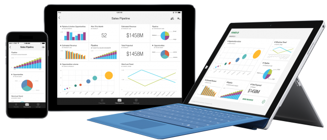
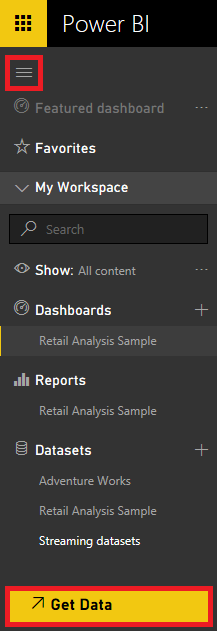
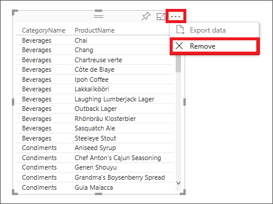
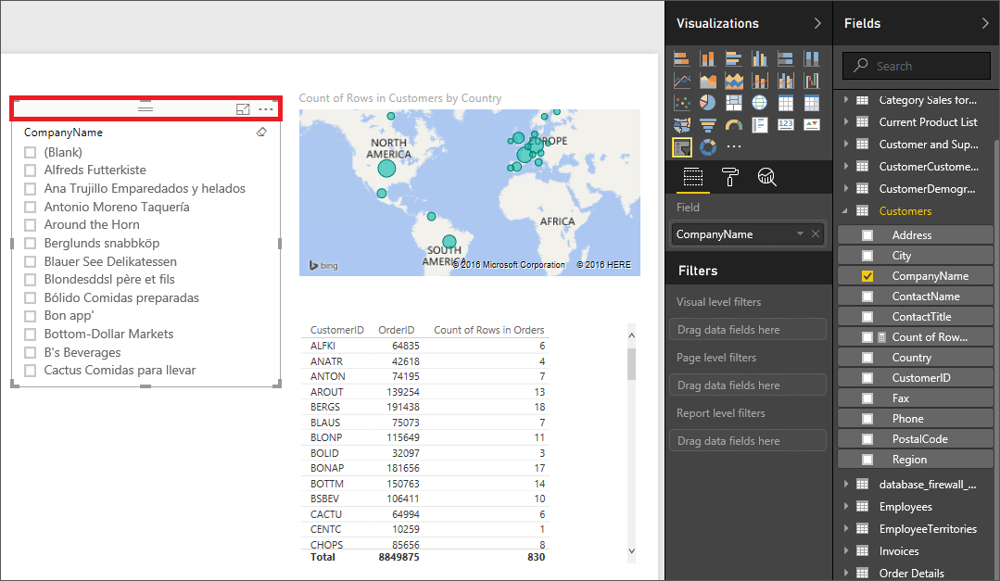
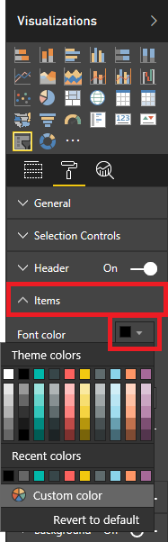
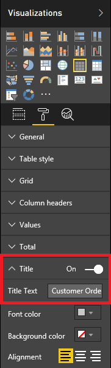
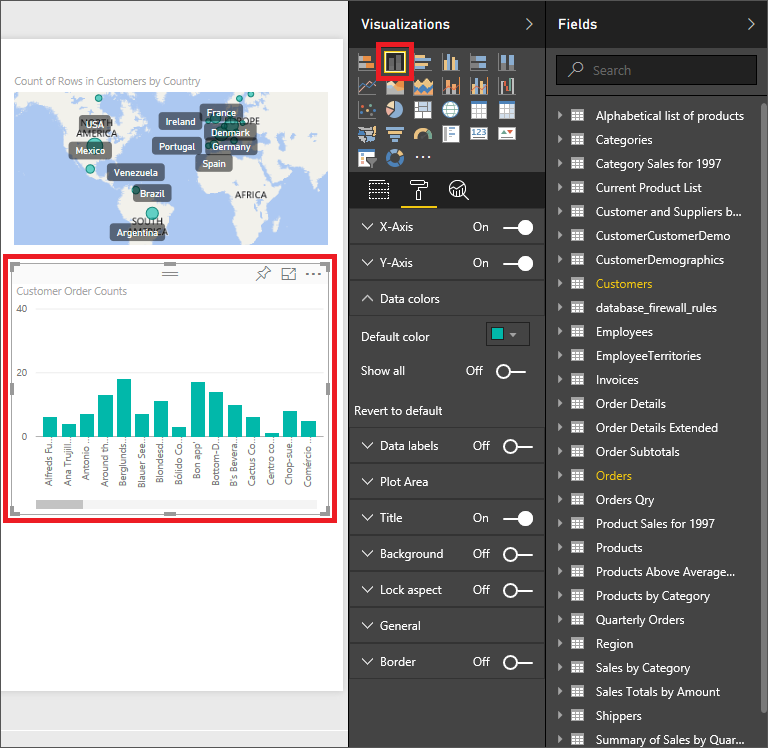
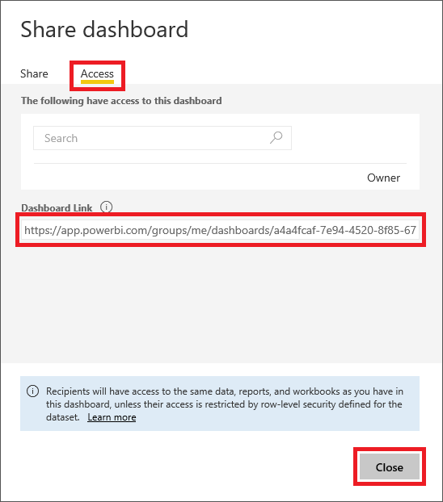
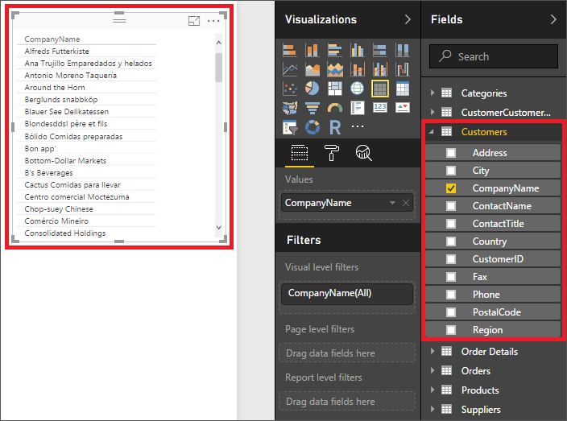

Using Microsoft Power BI to Explore and Visualize Data
Overview
Microsoft Power BI was created to address the data explosion in commercial and academic organizations, the need to analyze that data, and the need for rich, interactive visuals to represent the data and reveal key insights. It contains a suite of tools that assist in the full life cycle of data analysis, from data discovery and collection to data transformation, aggregation, visualization, sharing, and collaboration. Moreover, it allows you to create rich visualizations without writing any code and present them in interactive dashboards.
Power BI can organize and unify all of your organization’s data to provide a clear, real-time view of your world. Its features include data connectors for a wide range of services and applications, support for popular file formats and databases, a full-featured expression engine, a WYSIWYG editor for creating sophisticated visualizations, support for visualizing data on the Web or on mobile devices running iOS, Android, or Windows, and support for embedding visualizations in your own Web or mobile apps.

Interactive Power BI dashboard running on iOS and Windows
In this lab, you will use Microsoft Power BI to view sales data for a fictitious company and create reports and dashboards containing visualizations of that data. You will learn the basics of report creation and also learn various ways to share those reports with others, both internal and external to your organization.
Objectives
In this hands-on lab, you will learn how to:
- Connect Power BI to business data
- Visualize business data in a dashboard
- Add relationships to the visualizations you create
- Enhance visualizations and reports with formatting
- Publish and share Power BI content
- Use Power BI Desktop to do advanced modeling
Prerequisites
The following are required to complete this hands-on lab:
Exercises
This hands-on lab includes the following exercises:
Estimated time to complete this lab: 60 minutes.
Exercise 1: Connect to a database
The first step in using Microsoft Power BI to explore and visualize data is to connect to a data source. In this exercise, you will connect to an Azure SQL Server database containing customer, product, and sales data for a fictitious company named Adventure Works.
-
Open the Power BI Services Portal at https://powerbi.microsoft.com. If you are not signed in to Power BI, click Sign In and log in with your Microsoft Office 365 Account.
-
Click the hamburger icon to open the side menu, and then click Get Data.

Accessing data sources
-
Under "Import or Connect to Data," click Get in the "Databases" tile.

Accessing databases
-
Click Azure SQL Data Warehouse. Then click Connect in the pullout that appears below the tile.
If you are informed that "This content pack is a Power BI Pro feature," accept the free trial of Power BI Pro. Then repeat this step to connect to Azure SQL Data Warehouse.

Accessing Azure SQL Data Warehouse
-
Enter the values shown below in the "Connect to Azure SQL Data Warehouse" dialog. Then click the Next button.

Connecting to a SQL Server database
-
Enter "PowerBILabUser" (without quotation marks) as the username and "PowerBI_1" (again without quotation marks) as the password. Then click Sign in to connect to Azure SQL Data Warehouse and the Adventure Works database.

Entering SQL Server credentials
-
Click the hamburger icon to open the side menu if it isn't already open, and confirm that a new item named "powerbilabs" appears in the menu under "Datasets."

The new dataset
You are now connected to an instance of the Adventure Works database hosted in Azure SQL Data Warehouse. Now it's time to build a report that depicts some of the data in the database.
Exercise 2: Create a data visualization
The heart of Power BI is the rich visualizations you can present to the user via dashboards and reports. In this exercise, you will create a report that shows data from one of the tables in the Adventure Works database.
-
Click powerbilabs in the side menu to open the dataset in the report designer.

Opening the powerbilabs dataset
-
In the report designer, click the Table icon in the "Visualizations" panel to add an empty table visualization to the workspace.

Adding a table visualization
-
To connect the table visualization to your data, click Customers in the "Fields" panel to display the fields in the database's Customers table.

Selecting the Customers table
-
Check CompanyName, ContactName, and Phone to add these fields to the table visualization.
You can resize the table visualization as desired by dragging the directional handles located around its edges.

Selecting fields in the Customers table
-
To view your report visualization in interactive mode, click Reading view. If prompted to save your report, click Save and enter the name "Adventure Works" (without quotation marks).
In interactive mode, you can perform actions on your visualizations, such as sorting, grouping, and drilling down into other report elements.

Switching to reading view
-
Click the arrow in the header of the CompanyName column to toggle the sort direction.

Toggling the sort direction
-
Click Edit report in the top menu to exit interactive mode.

Exiting interactive mode
-
To change the fields displayed in the visualization, go to the "Fields" panel and uncheck all of the fields in the Customers table. Then click Products by Category to show the items underneath it, and check CategoryName and ProductName. Your table visualization will update with the selected values.

Changing the fields in the table visualization
-
Click Save in the top menu to save the report.

Saving your report
Creating a report from a single table is easy: simply check the fields that you want to display in a visualization. You used a table visualization in this exercise, but there are lots of other visualizations to choose from. Feel free to try other visualizations and experiment with the different ways in which data can be visualized.
Exercise 3: Add related data visualizations
Now that you know how to create a simple visualization, it's easy to add related visualizations as well as create visualizations of other types. In the previous exercise, you used a table visualization to depict product data. In this exercise, you will work with customer data using table visualizations and map visualizations.
-
Remove the existing table visualization by clicking the ellipsis (...) in the upper-right corner and clicking Remove.

Removing a visualization
-
Click the Table icon in the "Visualizations" panel to add an empty table visualization to the workspace.
Adding a table visualization
-
In the "Fields" panel, check CompanyName and Count of Rows under Customers.

Selecting fields in the Customers table
-
Click an empty area on the report designer surface to prepare the report designer to accept a new visualization.
-
Check CustomerID, OrderID and Count of Rows under Orders. Observe that the report designer automatically creates a new table visualization for you.

Selecting fields in the Orders table
-
Click an empty area on the report designer surface to prepare the report designer to accept a new visualization.
-
In the "Visualizations" panel, click the Slicer icon to add a slicer visualization. Then, in the "Fields" panel, check CompanyName under Customers. The slicer visualization will populate with a list of customers.
The purpose of a slicer is to narrow the portion of the dataset shown in other visualizations. Since both of your visualizations contain related data, Power BI automatically understands the relationships and responds to actions performed in related elements.

Adding a slicer visualization
-
To demonstrate how related visualizations interact, click Around the Horn in the slicer visualization and observe how the table visualizations update to show order information for the selected customer.
You can select multiple customers in the slicer by holding down the Ctrl key as you check the boxes for each customer.

Showing data for a specific customer
-
Click Around the Horn again to uncheck it.
-
Up to this point in the exercise, you have been working with simple lists of data. To create more compelling visualizations, you can select a different type of visualization in the "Visualizations" panel. To demonstrate, begin by selecting the table visualization that shows Customer, CompanyName, and Count of Rows.
-
In the Customers section of the "Fields" panel, uncheck CompanyName and check Country.

Changing the fields displayed in a visualization
-
In the "Visualizations" panel, click the Map icon and observe how the table visualization changes to an interactive map that includes proportionally sized map elements (the green circles) representing the number of customers in different countries. The customer counts come from the Count of Rows field. Now hover the mouse cursor over one of the green circles in the map to display a tooltip containing information about the number of customers in that country.

Changing a table to a map
-
Click Save in the top menu to save the changes to your report.
Saving your report
The map visualization is a step in right direction toward creating richer visualizations, but your report is still somewhat plain. In the next exercise, you will use some of Power BI's report formatting options to add more flair.
Exercise 4: Enhance your visualizations
No matter how valuable and relevant your data may be, unless it's presented in a way that's easy to understand and visually appealing, consumers of that data will find it difficult to extract meaning from it. One of the most effective ways to grab a viewer's attention and present data in a meaningful way is to apply formatting and other enhancements to your visualizations. In this exercise, you will enhance the visualizations you have created in order to dress up your report.
-
Click the header of the slicer visualization to select the slicer.

Selecting the slicer
-
Click the Format icon in the "Visualizations" panel.

Displaying formatting options
-
Click Items to expand the "Items" panel. Then use the color picker adjacent to "Font color" to set the font color to black.

Changing the font color
-
Change the text size to 12.

Changing the text size
-
Click the header of the table visualization to select it.

Selecting the table visualization
-
Click the Format icon in the "Visualizations" panel. Then expand the "General" panel and set the text size to 12.

Changing the text size
-
Expand the "Title" panel and click the slider to change Off to On. Then type "Customer Order Counts" (without quotation marks) into the "Title Text" box.

Editing a visualization title
-
Click the header of the map visualization to select it.

Selecting the map visualization
-
Click the Format icon in the "Visualizations" panel. Then expand the "Data colors" panel and use the color picker adjacent to "Default color" to set the default color to purple.

Changing the map's default color
-
Click the slider next to "Category labels" to change Off to On and turn labels on in the map.

Turning on map labels
-
Click the header of the table visualization to select it.
-
Locate the Customers table in the "Fields" panel and check CompanyName. Then move down to the Orders table and uncheck CustomerID and OrderId.

Changing the fields shown in the table visualization
-
Click the Stacked column chart icon in the "Visualizations" panel to change the table visualization into a stacked-column chart.

Changing a table visualization into a stacked column chart
-
Click the Format icon in the "Visualizations" panel. Then expand the "Data colors" panel and use the color picker adjacent to "Default color" to set the default color to purple.

Changing the chart's default color
-
Click Save in the top menu to save the changes to your report.
Saving your report
Feel free to adjust other values as well and try different visualizations to see how the data is presented. When you are satisfied with the formatting changes, the next step is to share your report.
Exercise 5: Publish and share content
Power BI makes it easy to publish and share your content with users and groups of users, both internal and external to your organization. In this exercise, you will insert the report that you created in previous exercises into a dashboard and learn how to share that dashboard with other Power BI users. The you will see how Power BI's "Publish to Web" feature can be used to share content with external users.
-
Click Pin Live Page in the top menu of the Adventure Works dashboard.

Pinning a live page
-
Select New dashboard, enter "Adventure Works" (without quotation marks) as the dashboard title, and click Pin live.

Creating a new dashboard
-
Click Adventure Works in the "Dashboards" section of the side menu.

Selecting the Adventure Works dashboard
-
Click Share in the upper-right corner of the dashboard.

Sharing the dashboard
-
Type your Office 365 e-mail address — the one you logged into Power BI with — into the e-mail address box. Then click Share to e-mail yourself a link to the Adventure Works dashboard.
You are only sharing the dashboard with yourself, but realize that you can share the dashboard with any Power BI user by including the e-mail address that they use to access Power BI in the list of e-mail addresses that you enter.

Entering a list of recipients
-
Click Share again. Click Access and copy the URL under Dashboard Link to the clipboard. Then click the Close button to close the "Share dashboard" panel.

Copying the dashboard link
-
Open a new browser tab or window and paste the dashboard link into the address bar to see how the dashboard will appear to users you share it with.
-
Sharing a dashboard this way limits its visibility to those you grant access to. However, Power BI also offers a "Publish to Web" feature that allows a report to be embedded in a public Web site or shared publicly through a URL. To demonstrate, return to the Power BI Services Portal and click Adventure Works in the "Reports" section of the side menu to open the report.

Opening the Adventure Works report
-
Click File in the menu in the upper-left corner of the report, and then click Publish to web.

Publishing to the Web
-
Click Create embed code.

Creating an embed code
-
Click Publish.

Publishing the report
-
The dialog that ensues contains two important values: a link that you can use to share the report with anyone (whether they're a Power BI user or not), and an IFRAME that you can paste into a Web page to embed the report in the page. Inspect these values, and then click Close to close the dialog.

Values for sharing a report publicly
It's that simple to publish and share your Power BI content. If you are working with Power BI on a Windows computer, you can do even more by leveraging Power BI Desktop. If you are running Windows, proceed to Exercise 6. Otherwise, you are finished with this lab.
Exercise 6: Do more with Power BI Desktop
The Power BI Services Portal is both flexible and robust, and since it runs in a browser, it can be accessed from any computer. But if you're a Windows user, you have an even more powerful tool at your disposal: Power BI Desktop. It includes advanced features the portal does not, especially when it comes to query management, visualizations, and modeling. In this exercise, you will use Power BI Desktop to connect to a database, create a table visualization, and add a computed column to the visualization.
-
In the Power BI Services Portal, click the Download icon in the top-right corner and select Power BI Desktop. (Alternatively, you can point your browser to https://powerbi.microsoft.com/en-us/desktop/ and click the Download button there to download and install Power BI Desktop.) Follow the onscreen instructions to install Power BI Desktop on your computer.

Downloading Power BI Desktop
-
Start Power BI Desktop. If you are asked to sign in, do so with your Microsoft Office 365 Account.
-
Click Get Data in the ribbon at the top, and then select SQL Server.

Accessing data sources in Power BI Desktop
-
Enter the values shown below in the "SQL Server Database" dialog. Then click the OK button.

Connecting to the Adventure Works database
-
If prompted for credentials, click Database on the left so you can provide database credentials rather than Windows credentials. Enter "PowerBILabUser" (without quotation marks) as the username and "PowerBI_1" (again without quotation marks) as the password. Then click Connect to connect to the Adventure Works database.

Entering database credentials
-
In the "Navigator" dialog, click Customers and Products to select the corresppnding tables, and then click Select Related Tables. Power BI will analyze the relationships in those tables and automatically select additional tables. Finish up by clicking Load.

Selecting tables and loading the dataset
-
Go to the "Visualizations" panel and click the Table icon to add a table visualization.

Adding a table visualization
-
To connect the table visualization to your data, go to the "Fields" panel and click Customers to show the fields in the Customers table. Then click CompanyName to add the CompanyName field to the visualization.

Adding CompanyName to the visualization
-
Add the ProductID field from the Order Details table, the OrderID field from Orders, and the ProductName field from Products to the visualization. If needed, drag the handle on the right edge of the table visualization to expand it so you can see the added fields.

Adding additional fields
-
Click Order Details in the "Fields" panel.

Selecting Order Details
-
Click New Measure in the ribbon at the top. A formula input box will be displayed.

Creating a new measure
-
Enter the following data-analysis expression (DAX) into the input box and click the check mark to left of it to validate and save the expression. A new column named "Measure" will appear under Order Details in the "Fields" panel representing the average product price for a group of orders.
Measure = AVERAGE('Order Details'[UnitPrice])
-
Place the mouse cursor over "Measure" in the "Fields" panel and click the ellipsis (...) that appears. Select Rename from the menu. Then type "AveragePrice" (without quotation marks) as the new name for the measure.

Renaming the measure
-
Click AveragePrice to add the average product price to the table visualization.

Adding AveragePrice to the table visualization
-
Click Modeling to display the Modeling ribbon. Then change the number of decimal places displayed to 2. Observe how the AveragePrice column updates in the table visualization.

Changing the number of decimal places
The ability to add measures to a model is just one of the ways in which Power BI Desktop extends what you can do with the Power BI Service Portal. Other features exclusive to Power BI Desktop include calculated columns and calculated tables. Feel free to play around with the model to experiment with these features and learn why Power BI Desktop is the tool of choice for most Power BI experts.
Summary
In this hands-on lab you learned how to:
- Connect Power BI to business data
- Visualize business data in a dashboard
- Add relationships to the visualizations you create
- Enhance visualizations and reports with formatting
- Publish and share Power BI content
- Use Power BI Desktop to do advanced modeling
There is much more you can do to leverage the power of Power BI, but this is a start. Take time to experiment with other Power BI and Power BI Desktop features, and identify other ways you can enhance your business intelligence by integrating Power BI into your processes.
Copyright 2016 Microsoft Corporation. All rights reserved. Except where otherwise noted, these materials are licensed under the terms of the MIT License. You may use them according to the license as is most appropriate for your project. The terms of this license can be found at https://opensource.org/licenses/MIT.